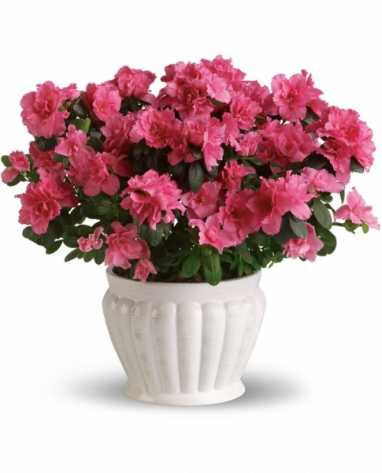
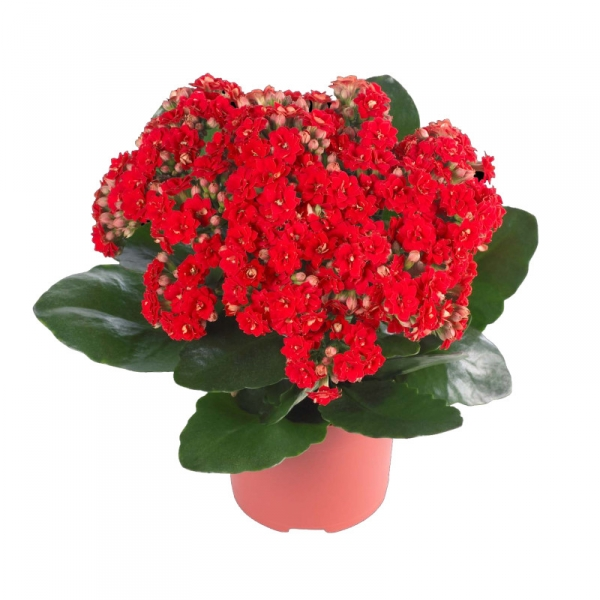
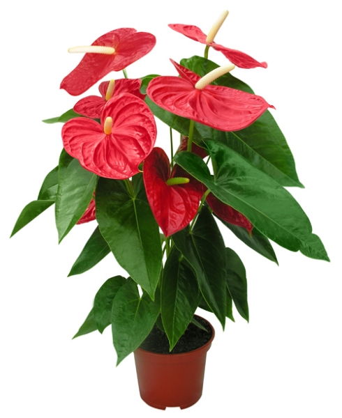
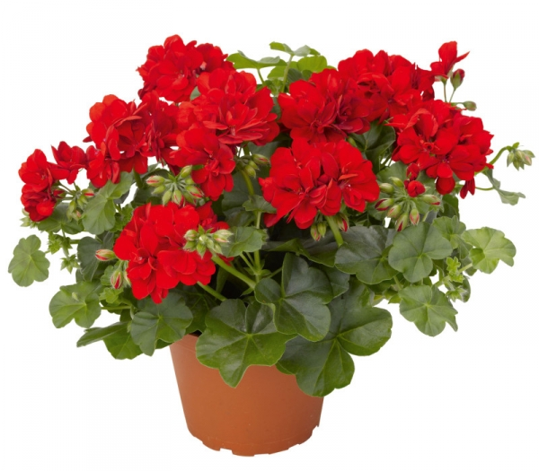
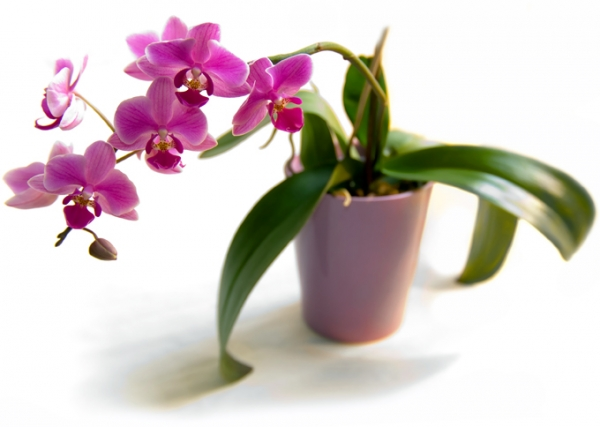

Популярні кімнатні рослини

Азалія
Все частіше квітучу азалію в горщику дарують замість букетів на різні урочистості, ось тільки при покупці цього вазону, квітів у рослини величезна кількість
і виглядають вони чудово, але після декількох тижнів на підвіконні квіти починають швидко в’янути, а про формування бутонів і мови немає.

Каланхое
Квітка каланхое також входить у вісімку самих популярних квітучих кімнатних рослин. Ця рослина дуже полюбилася квітникарям, оскільки вона не вимагає особливого догляду і легко переносить квартирні умови.

Антуріум
Ще цю квітку називають «чоловіче щастя», деякі види цієї рослини здатні цвісти цілий рік і радувати вас своїми красивими червоними квітами. Як тільки квітці стане не комфортно, її листя пожовтіє, а квіти зів’януть, тому постарайтеся спочатку створити для нього відповідні умови.

Герань
У багатьох квітникарів герань асоціюється зі специфічним запахом, який з’являється, якщо потерти її листя. Це дуже популярна кімнатна рослина, яка досить невибаглива у догляді. Одна з головних її переваг — світолюбивість, вазон з квіткою можна сміливо поставити під прямі сонячні промені, рослина буде вам вдячна.

Орхідея
За останні роки величезну популярність у домашньому квітникарстві придбали орхідеї, їх різноманітність не залишить байдужим найвибагливішого гурмана квітникаря. Але багато хто стикається з проблемою, коли після декількох тижнів в будинку, квітки орхідеї опадають, а нові так і не з’являються. Вся справа в догляді, якщо цій рослині не комфортно, то квітконосів від неї не дочекатися.
|
|